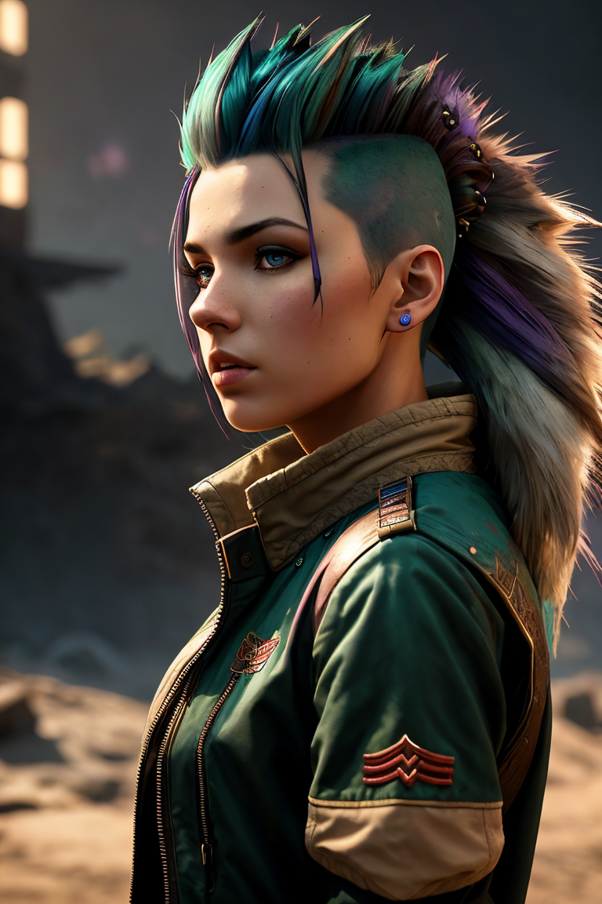
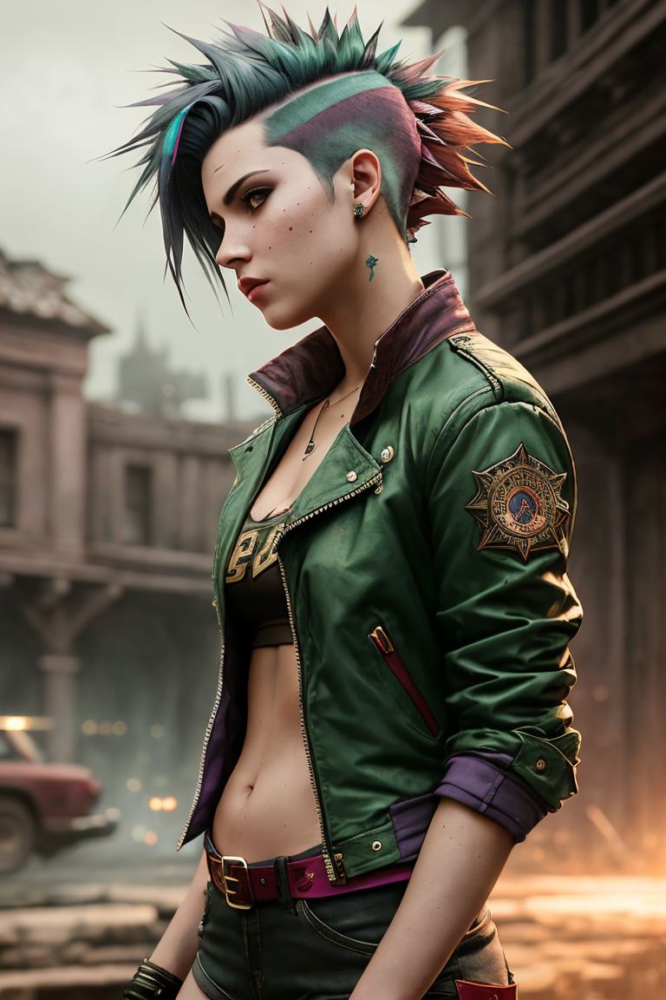
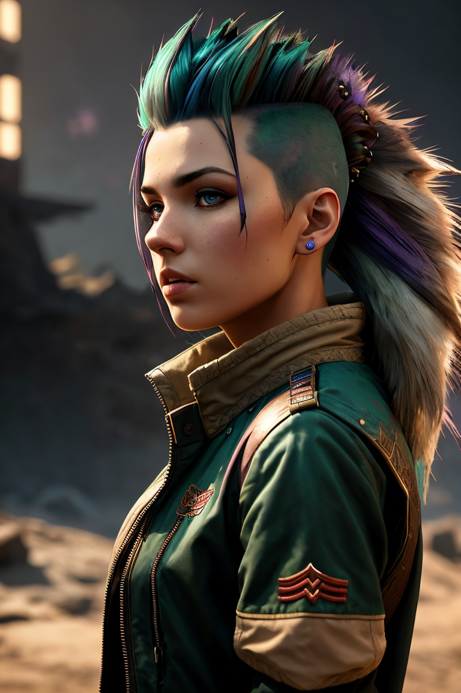
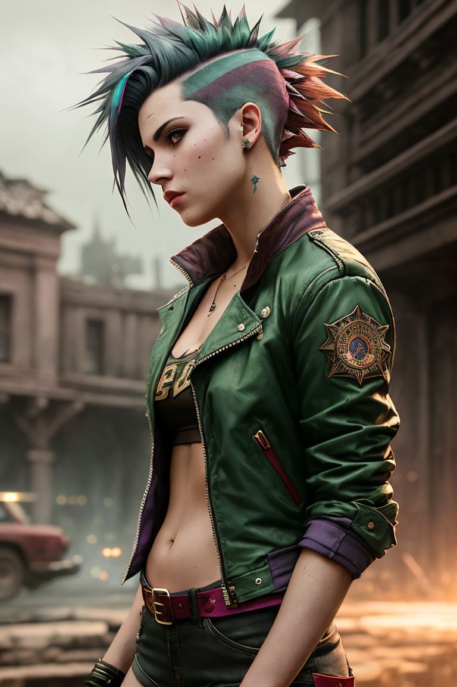

For who this tutorial?
This tutorial is for those who have already installed automatic1111
What means "Prompt TOKENS"?
Prompt TOKENS - some words written by you that tell the neural network what you want.
Where I can write it?
In the first text box
Second one is for a "Negative Prompt TOKENS"

What means "Negative Prompt TOKENS"?
So, it is what you wouldn't want to see in the resulting picture
Well, let's move on to something more complicated
The Prompt must have a certain structure, the words must be written in English and separted by commas.
Also, you can specify the importance of the word for the picture using "()" or "(word:1.2)"
, epic realistic, a europian woman, casual dressed, (pink hair_0.9), beautiful face, (natural skin texture, hyper.png)
a europian woman, casual dressed, (pink hair:0.9), beautiful face
, epic realistic, a europian woman, casual dressed, (pink hair_1.3), beautiful face, (natural skin texture, hyper.png)
a europian woman, casual dressed, (pink hair:1.3), beautiful face
"Prompt TOKENS" which have been used for this picture - casual
So, let's see how hard tokens look like

(dark shot_1.1), epic realistic, a europian woman, from side, (mohawk [green_pink_0.6] hair_1.2), dark red jacket, short shorts

(dark shot_1.1), epic realistic, a europian woman, from side, (mohawk [green_pink_0.6] hair_1.2), dark red jacket, short shorts
(dark shot_1.1), epic realistic, a europian woman, from side, (mohawk [green_pink_0.6] hair_1.2), dark red jacket, short shorts,.png)
(dark shot_1.1), epic realistic, a europian woman, from side, (mohawk [green_pink_0.6] hair_1.2), dark red jacket, short shorts
There you can see interesting TOKEN "(mohawk [green:pink:0.6] hair_1.2)"
[green:pink:0.6] This part of TOKEN tells the neural network that it should generate 60% of the steps green and then spend the remaining 40% of the steps generating pink.
a europian woman, casual dressed, (pink hair:0.9), beautiful face
a europian woman, casual dressed, (pink hair:1.3), beautiful face

(dark shot_1.1), epic realistic, a europian woman, from side, (mohawk [green_pink_0.6] hair_1.2), dark red jacket, short shorts

(dark shot_1.1), epic realistic, a europian woman, from side, (mohawk [green_pink_0.6] hair_1.2), dark red jacket, short shorts